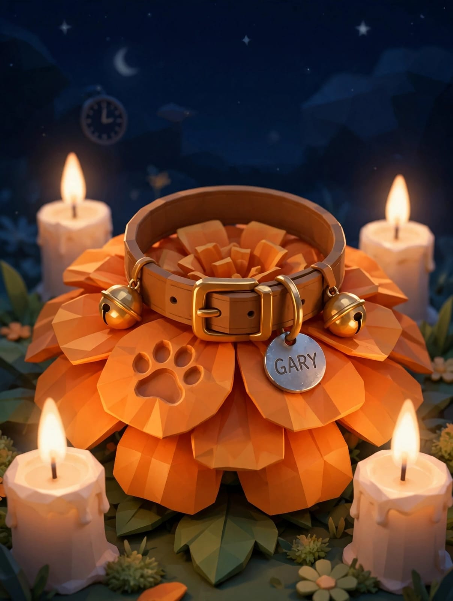
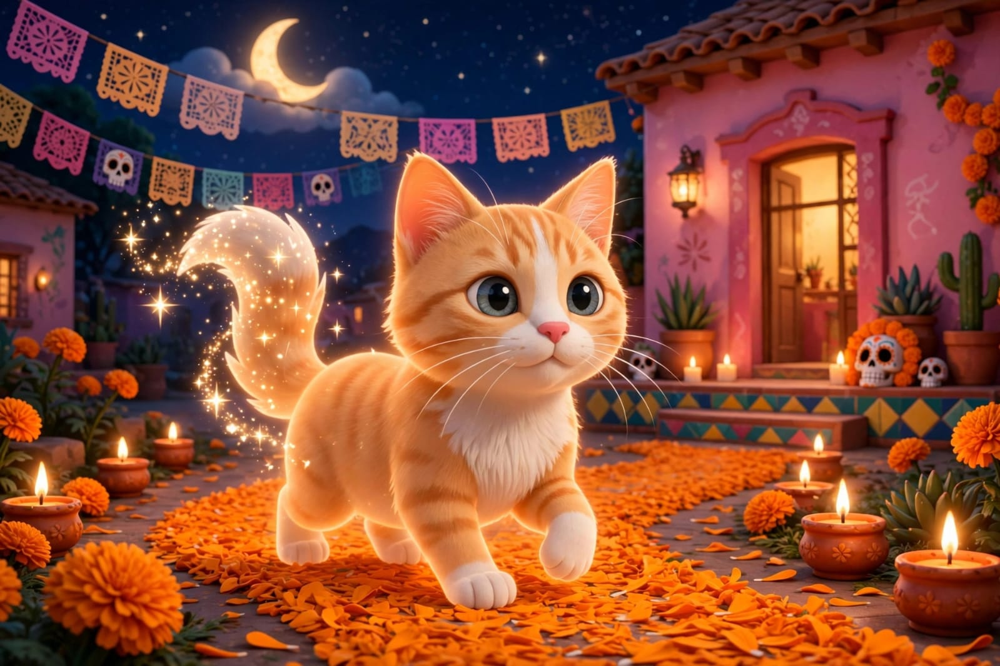

Un espacio dedicado a validar tu amor y su memoria con absoluto respeto y cariño.
No se supera la partida de un ser que cuidaste como a tu propio hijo; se aprende a llevar su luz y su recuerdo apretado en el pecho.
Lo cuidaste y lo protegiste hasta el último segundo. Hiciste todo lo que un ser con un corazón enorme podía hacer por su compañero.
No hay por qué fingir que no duele. La tristeza no es debilidad; es la medida exacta del amor gigante que le diste, Gabi.
Cuidas a todos a tu alrededor y trabajas sin parar. Que el recuerdo de Gary sea hoy un abrazo tibio que te permita descansar con calma.